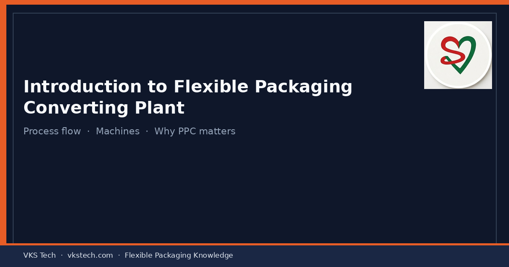
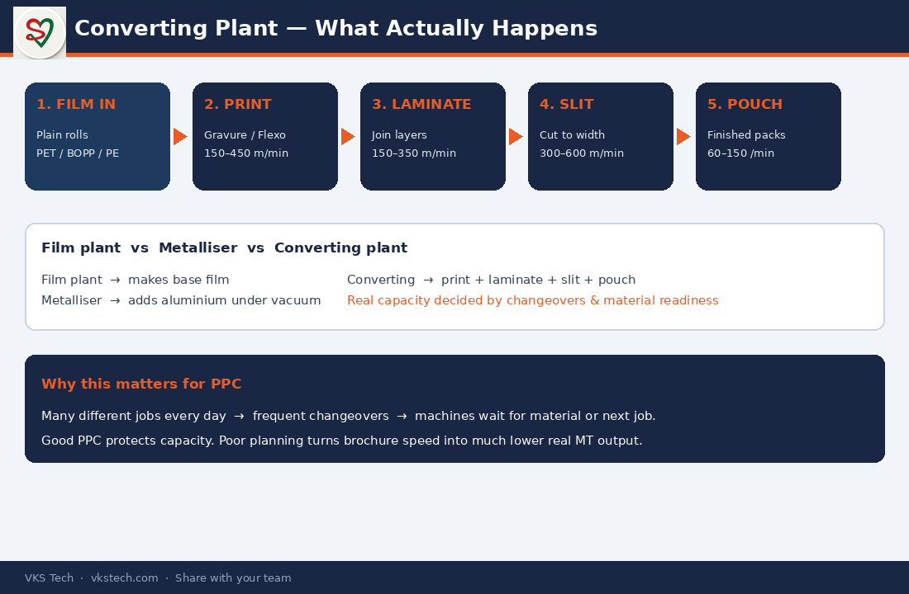

🏭 Most People Confuse a Converting Plant with a Film Plant. Here’s the Real Difference.
📖 11-min read · Converting basics · PPC + Production + Plant Heads
If you walk into a flexible packaging unit and see printing, lamination, slitting and pouching running side by side — you are inside a converting plant. It does not make the film. It turns plain film into the packaging that brands and consumers actually use.
This difference matters. Many planning mistakes, capacity arguments and interview answers fail because people mix up film manufacturing, metallising and converting. This article gives you the clear, plant-level picture.
- Input: Plain film / foil / paper rolls
- Core chain: Print → Laminate → Slit → Pouch
- Output: Printed laminated rolls or finished pouches
- Biggest daily challenge: Many different jobs → frequent changeovers → material + capacity planning
1. Converting vs Film Plant vs Metalliser
| Type | What it mainly does | Typical output |
|---|---|---|
| Film plant | Extrudes / casts base film | Plain PET, BOPP, PE rolls |
| Metalliser | Adds aluminium layer under vacuum | Metallised film |
| Converting plant | Prints, laminates, slits, makes pouches | Printed packs ready for filling or sale |
Some large groups have all three under one roof. Most pure converting plants buy film and focus only on the converting chain.

2. The Real Process Flow (What Happens on the Floor)
- Printing (Gravure or Flexo) — Brand design and colours go on the film. This is where most visual quality is decided.
- Lamination — Two or more layers are joined with adhesive (solvent-based or solvent-less). Structure, barrier and strength are created here.
- Slitting — Wide printed/laminated rolls are cut into the exact widths the customer or pouching line needs.
- Pouching — Film is formed, sealed and cut into centre-seal, side-seal or stand-up pouches.
Between every step there is material movement, quality checks and often a changeover. That is where capacity is won or lost.
3. Machines & Typical Speeds (Numbers You Can Use)
| Machine | What it does | Typical speed range |
|---|---|---|
| Gravure / Flexo press | Prints design | 150–450 m/min |
| Laminator | Joins layers | 150–350 m/min |
| Slitter | Cuts width | 300–600 m/min |
| Pouching machine | Makes finished pouches | 60–150 pouches/min |
These are realistic ranges, not brochure maximums. Actual output depends on job mix, changeovers and efficiency — topics covered later in this series.
4. Why PPC Becomes the Most Important Role
A metalliser often runs long campaigns of similar film. A converting plant runs many different designs, widths, structures and order sizes every day. That creates four permanent pressures:
- Changeovers — plates, cylinders, adhesives, pouch tools
- Material readiness — right film, ink, adhesive, cores at the right time
- Idle time risk — machine waiting for the next job or material
- Hidden wastage — 8–15% material loss is common if not tracked machine-wise
Good PPC does not just “plan the schedule”. It protects capacity, reduces wastage and keeps delivery promises realistic.
Next in series → Gravure Printing Explained Simply (how the most common high-quality process actually works on the floor)
🏭 ज्यादातर लोग कन्वर्टिंग प्लांट को फिल्म प्लांट समझ लेते हैं। असली फर्क यह है।
📖 11-मिनट पढ़ें · कन्वर्टिंग बेसिक्स · PPC + प्रोडक्शन + प्लांट हेड
अगर आप किसी फ्लेक्सिबल पैकेजिंग यूनिट में घूमें और प्रिंटिंग, लैमिनेशन, स्लिटिंग और पाउचिंग एक साथ चलते देखें — आप कन्वर्टिंग प्लांट में हैं। यह फिल्म नहीं बनाता। यह सादी फिल्म को उस पैकेजिंग में बदलता है जो ब्रांड और उपभोक्ता वास्तव में इस्तेमाल करते हैं।
- इनपुट: सादी फिल्म / फॉइल / पेपर रोल
- मुख्य चेन: प्रिंट → लैमिनेट → स्लिट → पाउच
- आउटपुट: प्रिंटेड लैमिनेटेड रोल या तैयार पाउच
- सबसे बड़ी रोज़ की चुनौती: कई अलग जॉब → बार-बार चेंजओवर → मटेरियल + क्षमता प्लानिंग
1. कन्वर्टिंग vs फिल्म प्लांट vs मेटलाइज़र
फिल्म प्लांट बेस फिल्म बनाता है। मेटलाइज़र वैक्यूम में एल्युमिनियम लेयर चढ़ाता है। कन्वर्टिंग प्लांट प्रिंट, लैमिनेट, स्लिट और पाउच बनाता है। तीनों अलग काम हैं।
2. असली प्रोसेस फ्लो
- प्रिंटिंग — डिज़ाइन और रंग
- लैमिनेशन — लेयर जोड़ना (स्ट्रक्चर और बैरियर)
- स्लिटिंग — सही चौड़ाई काटना
- पाउचिंग — तैयार पाउच बनाना
3. मशीनें और स्पीड रेंज
प्रिंटिंग 150–450 m/min · लैमिनेशन 150–350 m/min · स्लिटिंग 300–600 m/min · पाउचिंग 60–150 पाउच/मिनट। ये वास्तविक रेंज हैं, ब्रॉशर मैक्सिमम नहीं।
4. PPC क्यों सबसे महत्वपूर्ण रोल बन जाता है
कन्वर्टिंग प्लांट में हर दिन अलग-अलग डिज़ाइन, चौड़ाई और ऑर्डर चलते हैं। चेंजओवर, मटेरियल तैयारी, खाली समय और छुपी वेस्टेज — ये चार दबाव हमेशा रहते हैं। अच्छा PPC सिर्फ शेड्यूल नहीं बनाता; वह क्षमता बचाता है और डिलीवरी वादों को वास्तविक रखता है।
अगला लेख → ग्रेव्योर प्रिंटिंग सरल भाषा में